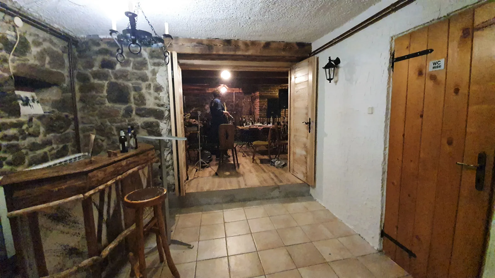

Radne akcije na Ratkovom skloništu
Lijepo vrijeme iskorišteno je u proteklih par vikenada kako bi se obnovilo i dotjeralo Ratkovo sklonište. Pililo se, farbalo, zabijalo, popravljalo,

Još otkako sam bio malen i po prvi puta čitao Družbu Pere Kvržice, Vlak u snijegu i sl. knjige koje su poticale kolektivni duh i zajednički rad za dobrobit svih, nešto mi se svidjelo u tom pojmu radnih akcija… Puno dobrih emocija i osjećaj svrhe i pripadnosti! Tako je bilo i ovog vikenda na Ratkovom skloništu, gdje su se okupili članovi sva 3 odsjeka PDS Velebit i uz malo pomoći slučajno pristiglih izletnika i planinara, odradili još jednu radnu akciju prije dolaska zime, na našem lijepom "kućerku" u carstvu Samarskih stijena…
Sve je počelo dobrim provodom u petak navečer, u mrkopaljskom brlogu zvanom Caffe Bar "Sušilo"… iliti, kako ga neki od milja zovu 'Fen'. Sviralo se svašta, od Claptona do Atomskog Skloništa, a mi se ugrijali uz pokoji gutljaj i malo "đuskanja", prije odlaska u svijet šume i stijene, na Ratkovo sklonište, gdje smo spavali u petak. Uz podršku HPS-a kupljena je drvena građa, koju smo tijekom subote dopremili sa 13-og km gore na sklonište…Tijekom dana pristiglo je dosta 'radne snage' te smo unatoč izrazitoj ljubavi nekih članova prema rimskom načinu života (čitaj nalakti se, pij iz kupice i gledaj druge kako rade), napravili konkretan posao. Nove daske pripemljene su na mjeru i zaštićene te je njima obnovljen ulazni podest u sklonište, koji je sada uredan, lijep, čist i siguran (MOLIMO NE CIJEPATI DRVA NA PODESTU!). Nakupljena su drva za zimu, a napravljeni su i manji popravci na krovu. Uz to, tko je bio zainteresiran, stiglo se malo i prošetati ljepotama Samarskih stijena, provlačiti kroz pukotine, uživati u pogledima sa okolnih 'stjenčuga', učiti o orjentaciji i smještaju okolnih planina.
Za ovu generaciju, bila je ovo jedna od rijetkih prilika da se sva 3 odsjeka našeg društva nađu na istom mjestu u isto vrijeme…Zajedništvo, veselje, rad, dobra hrana, dobar gutljaj, svirka, međusobno sprdanje među odsjecima, tu i tamo malo ljubavi (koga posreći) i osjećaj da si sudjelovao u nečem što ima bar malo 'višeg smisla'… Te naravno, na kraju svega, 'kavica' u Sušilu, prije odlaska doma…
Što reć', nego - Velebitaški duh na djelu.. :) ! Dio radne atmosfere pogledajte u kratkom videu: https://www.facebook.com/sovelebit/videos/403385857024377/ ... a o Velebitaškom duhu spoznajte više na ovom mjestu i samo jednim klikom NOVO! O dosadašnjim radovima pročitajte i u priči DOMAROVI DNEVNICI; (Franjo Radošević) objavljenoj na stranicama PDS Velebit. [gallery ids="3015,3016,3017,3018,3019,3020,3021,3022,3023,3024,3025,3026" type="rectangular"]